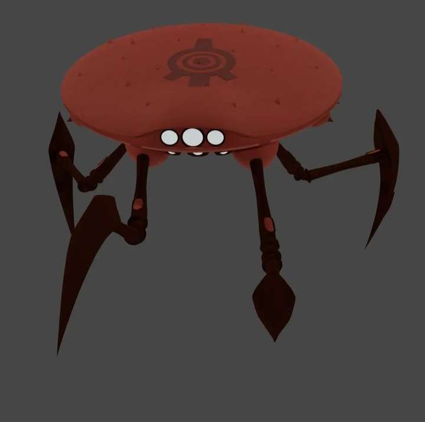

Código Lyoko
Código Lyoko es una serie animada francesa creada por Thomas Romain y Tania Palumbo en el año 2003, producida por
Antefilms en asociación con France 3 y Canal J. La serie utiliza la animación convencional para representar el mundo
real, y animación CGI en un mundo virtual tridimensional llamado Lyoko.
Los cangrejos son monstruos de XANA con forma de disco rojizo en forma de caparazón con cuatro largas patas de gran
agilidad que le permite moverse rápidamente, trepar por una superficie totalmente vertical y rotar en el sitio 180 grados.
Normalmente trabajan solos, en dúos o en tríos
